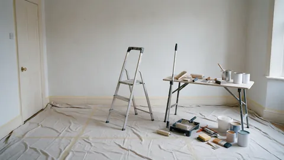

Generated photo
Generated photoGenerated for this demo. Not a photograph of a real job.
Painting the units is the biggest change you can make to a kitchen without taking it out, and for a fraction of what taking it out costs. It is also the job people are sold most optimistically, so here is the honest version: what it does, what it does not, and what decides whether it lasts.
What it will look like
From the doorway, like a new kitchen. The colour changes, the handles change, and the room reads differently the moment you walk in.
Up close, it looks like well painted furniture. A brushed and rolled finish has a very fine texture to it, which a sprayed factory door does not. That is not a fault, it is what the method gives you, and anybody telling you a hand painted kitchen will be indistinguishable from a sprayed one at arm's length is overselling it. Most people stop noticing within a week, but you should know before you spend the money rather than after.
Grease decides everything
Every kitchen door carries a thin film of cooking grease, including the ones that look spotless. It is worst above the hob, around the kettle and on the bin cupboard, and it is invisible until paint refuses to stick to it.
So the doors get washed with a proper degreaser, not washing up liquid, rinsed, and washed again where they need it. Then keyed all over with abrasive so there is a surface for the primer to grip. If a painted kitchen fails in its first year, it is almost always one of those two steps, and no amount of expensive paint on top makes up for either.
The primer has to match what the doors actually are
Kitchen doors are not all the same thing under the finish, and they want different primers.
- Solid timber and timber veneer. The most straightforward. Sand, prime, done. Knots in bare timber want treating or the resin bleeds through.
- Melamine faced board. Hard, slick and non porous. It wants a primer made for that, and it will not hold ordinary paint on its own.
- Foil wrapped board. The common one in kitchens from the last couple of decades, and the trickiest. It takes paint well with the right primer, but where the foil has already lifted at an edge or peeled near the oven, paint will not stick it back down. That gets pointed out before we start, because it does not get better.
- Previously painted. Depends entirely on what is under there. If it is sound it gets keyed and painted. If it is peeling it comes off first.
How the week goes, and what you lose
Doors and drawer fronts come off and each one is numbered on the inside edge so it goes back on the hinge it came from. The carcasses and the frames are painted in place with the worktop, the splashback and the floor masked off. The doors are painted flat on trestles, both sides, with real drying time between coats.
You keep the kitchen the whole time, which surprises people. The oven, the hob, the sink, the kettle and the worktop all carry on working. What you lose is the doors for a few days, so the cupboards are open to view and the worktops need clearing. Thin coats with proper drying between them are what makes the finish hard, and that part cannot be hurried by anybody.
Where it wears, and what to do about it
Three places, always, and in this order: the edges of the doors where hands catch them, the area round the handles, and the cupboard under the sink where water goes. None of that is a sign of a bad job, it is where a kitchen gets used.
So keep a little of the paint back in a small jar. A touch up on a door edge takes minutes with a small brush and it keeps a painted kitchen looking right for years. Clean with a soft cloth and warm water rather than anything abrasive, especially in the first few weeks while the paint is still hardening. Paint carries on getting harder for a good while after it feels dry.
When it is not the right answer
If the carcasses are sagging, the hinges are failing, the doors are swollen at the bottom from a leak, or the layout does not work, painting is lipstick on a problem. A painted door on a broken cupboard is still a broken cupboard, and the money would be better in a new kitchen or in fixing what is actually wrong.
If the carcasses are sound and the only thing wrong with the kitchen is that it looks dated, painting is one of the best value jobs there is.
The short version
Degreasing and the right primer are the whole job. The finish is excellent furniture rather than a factory panel. You keep the kitchen and lose the doors for a few days. It wears at the edges, the handles and under the sink, and a small jar of paint kept back makes that a ten minute job rather than a problem.
Written for this demo from general trade knowledge. It is not advice on your property, and anything wet, anything structural and anything that might be an older textured coating wants somebody looking at the actual house.
More advice
While you are here.

Generated photoGetting a room ready for the decorator
What to move, what to leave, what to tell us about, and the one thing people do that costs a day.
 Generated photo
Generated photoExterior painting: the best time of year
Why the calendar matters less than the wall and the dew point, and which months really are no good.
Want somebody to look at the actual walls?
Tell us which rooms and your postcode. Twenty minutes with a light held along the wall beats any article.